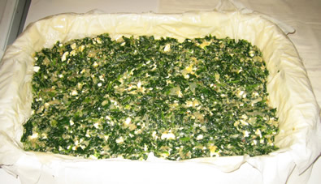

« Three (was Two) new little videos | Main | Belated Thanksgiving Post »
November 22, 2005
Spanakopita?
To file under: freaky parenting things nobody told you about

Today Guido Jack's poop is green. Looks a lot like spanakopita filling (above, more pics here), and smells like it a little bit too.
So of course we freak out, Google it and find all these scary things...then I realize that we ate a large Trader Joes Spinach Pie last night, mistery solved.
Is there any other food that will paint your baby's poop that we should know about? I have heard about asparagus...I can imagine beets will make a nice little red poop (even scarier), can't wait to try it out!
Posted by patata at November 22, 2005 09:46 AM
Comments
Beets will actually make it like a weird pinky-purple colour. Spinach is the green, natch. Carrots make it sort of orangey. But mr. Guido is still just breast feeding right? If so I bet it was also the spices in the spinach pie making an appearance. When I eat heavy on the garlic my daughters poop will surely smell like it!
Posted by: tulip at November 23, 2005 02:58 PM